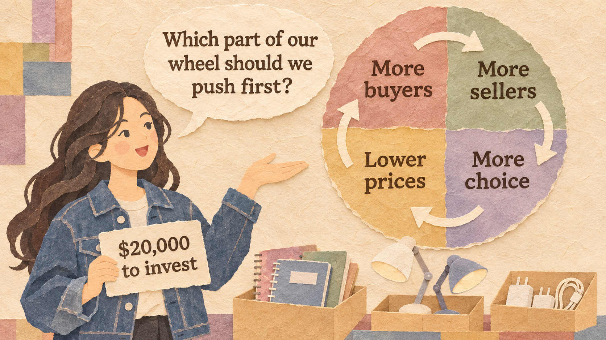
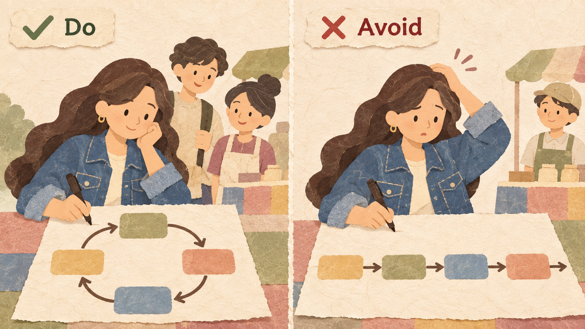
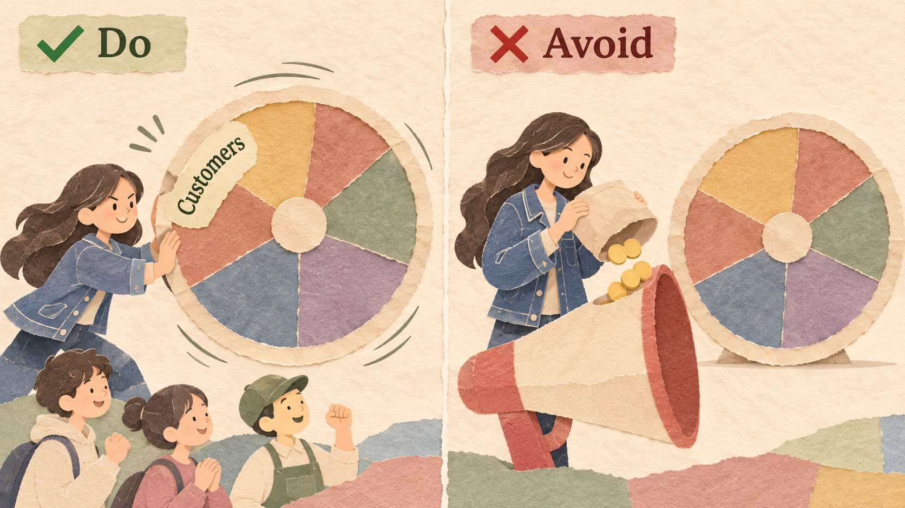
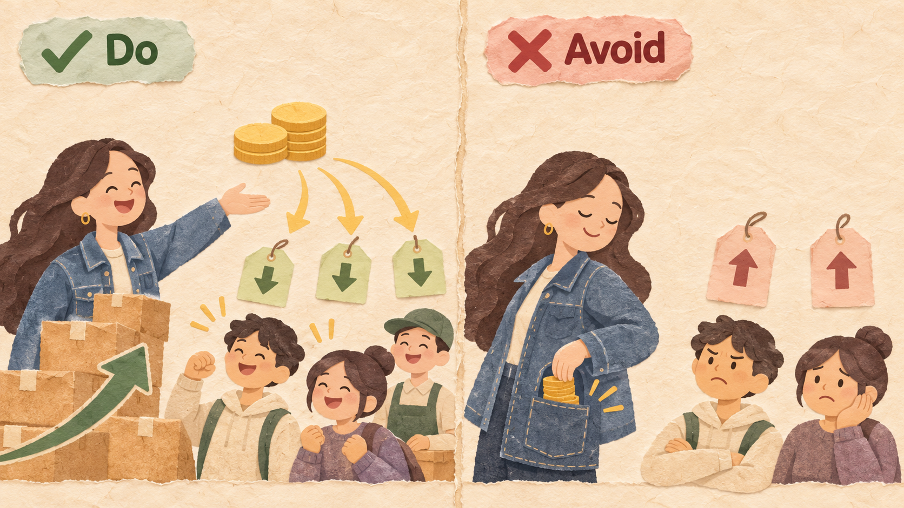
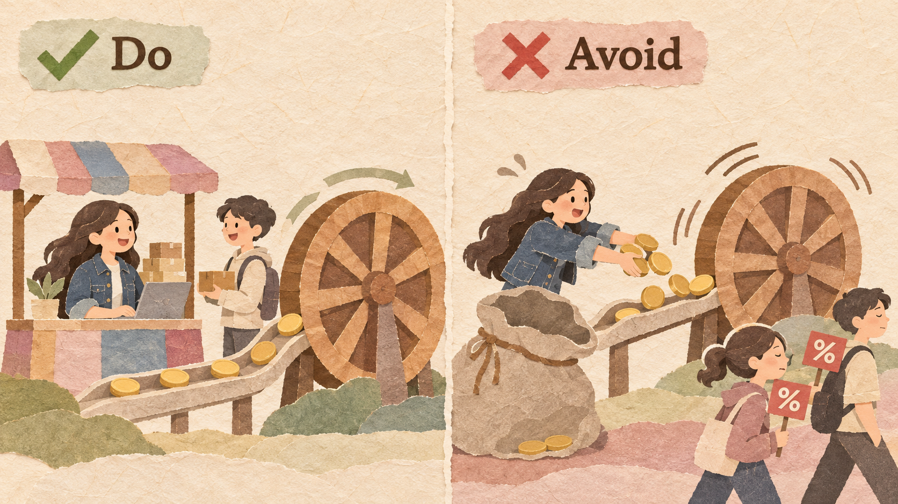

CampusMart is Sofia's online store for student goods. It buys and stocks every product itself, so it adds only a few products a month. Her marketing manager wants to spend $20,000 on ads; small campus shops ask to sell on CampusMart.
| CAMPUSMART (ONE MONTH) | VALUE |
|---|---|
| Buyers | 4,000 |
| Products for sale (all stocked by CampusMart) | 300 |
| Average order / profit per order (10%) | $25 / $2.50 |
| Monthly profit (4,000 x $2.50) | $10,000 |
| Delivery time | 3 days |
| Money to invest | $20,000 |
A business is built as a loop in which each part pushes the next. A flywheel is a heavy wheel: hard to start, but each push makes it spin faster. Amazon's loop: lower prices and more choice bring more buyers; more buyers attract more sellers; more sellers add choice; growing sales lower costs, so prices fall again. Instead of paying again and again for growth, the company invests in the parts of the loop that keep turning on their own.
Write the loop as arrows. For each arrow, ask: does more of this really lead to more of the next?

More buyers bring more outside sellers, because sellers want customers. More sellers add products. More products bring more buyers.
Drawing a loop with a weak arrow, such as "more buyers lead to lower prices" when the business is too small to get better prices.
Usually this is what customers feel: lower prices, more choice, or faster delivery. Spending there helps every other step.

Opening CampusMart to outside sellers adds hundreds of products without CampusMart buying any stock. More choice turns the whole loop.
Spending on ads that bring buyers for one month only. The wheel moves once and stops when the ads stop.
As the wheel spins, use the savings to lower prices or speed up delivery. That makes the wheel spin faster.

When CampusMart ships 300 orders a day instead of 130, delivery costs less per order, so Sofia offers next-day delivery.
Keeping all the savings as profit too early. Customers see no improvement, and the wheel slows down.
A flywheel is slow at first. Fund it from a profitable part of the business, not only with borrowed money or discounts, and know how long you can wait.

CampusMart's own product sales earn $10,000 a month. Sofia uses part of this profit to support the marketplace until seller fees grow.
Paying for growth with huge discounts funded by investors. When the money runs out, buyers who came for discounts leave.
In 2001, Jeff Bezos sketched Amazon's flywheel. Amazon opened its store to outside sellers; by 2023 they sold about 60% of the units on Amazon. It launched Prime in 2005 ($79 a year for free two-day shipping). In 2022, Amazon's online shops lost about $10.6 billion, but AWS, its cloud business, earned about $22.8 billion of operating profit and kept Amazon profitable.
Costco charges a yearly membership fee and keeps prices low: it limits how much it adds to the cost of most products (about 14 to 15%). About 90% of members worldwide renew each year. Membership fees brought in about $5.3 billion in fiscal 2025.
Jet.com launched in 2015 as an online store that promised lower prices than Amazon. It spent heavily on discounts and marketing, funded by investors. Walmart bought it in 2016 for about $3.3 billion. Sales did not keep growing, and Walmart shut Jet.com down in 2020.
ofo, a Chinese bike-sharing company, put millions of bikes on city streets and offered very cheap rides, paid for with investors' money. More bikes did not lower its costs: many were broken or lost. In December 2018, more than 10 million users asked for their deposits back, and ofo could not pay them all.
| EXAMPLE | RESULT | THE RULE THAT DECIDED IT |
|---|---|---|
| Amazon | Good | A real loop, funded by AWS profit (Rules 1 and 4) |
| Costco | Good | Savings go back to members (Rule 3) |
| Jet.com | Bad | Low prices bought with investor money (Rules 3 and 4) |
| ofo | Bad | Growth raised costs instead of lowering them (Rule 1) |
Write each step of the loop, and for each arrow write "because ..."
If you cannot finish the sentence, the arrow is weak.
Extra profit = new buyers who stay x profit per buyer per month x number of months
Profit = extra profit per period x number of periods - one-time cost
What you give up to get something you value more.
A promise, written before you start, about which result would make you change your decision.
Example: "If fewer than 50 outside sellers join in the first three months, we will lower the seller fee."
Six companies describe one arrow of their loop:
| ARROW | ANSWER | WHY |
|---|---|---|
| (a) Restaurants to customers | Strong | More choice brings more customers |
| (b) Viewers to video makers | Strong | Makers go where the viewers are |
| (c) Bakery flour prices | Weak | 20 kg a week is too little to get better prices |
| (d) Learners to better lessons | Strong | More practice data improves lessons (Session 2.1) |
| (e) Ads to loyal customers | Weak | Loyalty comes from products; ads stop |
| (f) Sellers to lower prices | Strong | Competing sellers lower prices |
4,000 buyers / $2.50 profit per order / one order per buyer per month / $20,000 to invest
Spend $20,000 on ads: 2,000 new buyers in month 1.
30% of them keep ordering every month after that.
Spend $20,000 to build it. 100 sellers add 3,000 products; their sales are $30,000 a month, with a 10% fee.
More choice adds 300 more buyers every month: 300, 600, ... up to 1,800 in month 6.
Draw a business's flywheel and check each arrow.
Find the step that turns the whole wheel.
Compare a one-time push with an investment in the loop and write a decision rule.
Collins, J. (2019). Turning the Flywheel. Harper Business.
Amazon.com, Inc. (2023). Form 10-K for fiscal year 2022. Segment operating income.
Marketplace Pulse. Amazon third-party seller share.
Costco Wholesale Corporation (2025). Form 10-K for fiscal year 2025.
Axios (2020, May 20). Walmart grounds Jet.com. Caixin Global (2018, December 17). Riders go to ofo in search of refunds.